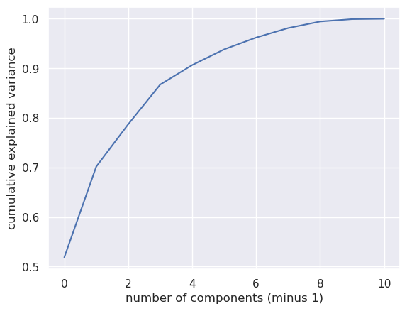
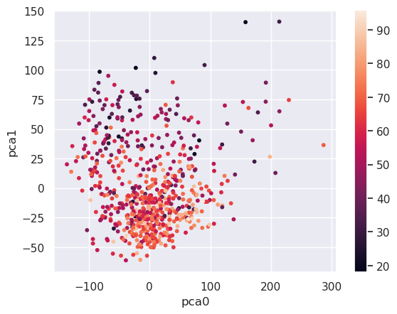
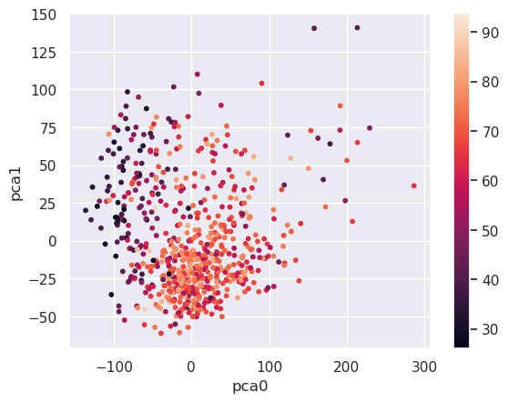

song data viewed through principal component analysis
Written on
Today we use principal component analysis to explore Spotify data for songs written between 1950 and 2010. The data are in separate files (called 1950.csv, 1960.csv, etc) for each decade; we start by combining them into a single data frame.
import pandas as pd
data_frames = {}
for i in range(1950,2011,10):
data_frames[i] = pd.read_csv(str(i)+'.csv')
data_frames[i] = data_frames[i].drop(['Number'],axis=1)
songs = pd.concat([data_frames[i] \
for i in range(1950,2011,10)])
print(songs.head())
title artist \
0 Put Your Head On My Shoulder Paul Anka
1 Whatever Will Be Will Be (Que Sera Sera) (with... Doris Day
2 Everybody Loves Somebody Dean Martin
3 Take Good Care Of My Baby - 1990 Remastered Bobby Vee
4 A Teenager In Love Dion & The Belmonts
top genre year bpm nrgy dnce dB live val dur acous spch \
0 adult standards 2000 116 34 55 -9 10 47 155 75 3
1 adult standards 1948 177 34 42 -11 72 78 123 86 4
2 adult standards 2013 81 49 26 -9 34 40 162 81 4
3 adult standards 2011 82 43 49 -12 12 66 151 70 6
4 adult standards 1959 79 38 56 -9 13 62 158 67 3
pop
0 72
1 62
2 61
3 60
4 60
The fields with unobvious meanings are: bpm = beats per minute; nrgy = energy level; dnce = danceability; dB = loudness; live = liveness (with a higher number meaning higher a likelihood of the recording being live); val = valence (with a higher number corresponding to a higher positive mood); dur = duration; acous = acousticness; spch = speechiness (higher means more spoken words); pop = popularity.
We extract the numerical fields and see how many principal components we need to explain various percentages of the data.
import numpy as np
import matplotlib.pyplot as plt
import seaborn as sns; sns.set()
from sklearn.decomposition import PCA
songs = pd.read_csv('all_years.csv')
pca = PCA()
X = songs.drop(['title','artist','top genre'],axis=1)
%matplotlib inline
pca.fit(X)
plt.plot(np.cumsum(pca.explained_variance_ratio_))
plt.xlabel('number of components (minus 1)')
plt.ylabel('cumulative explained variance')
Text(0, 0.5, 'cumulative explained variance')

We see that about 70% of the data can be explained by two principal components (note that the first component is labeled "0"). Let's express the data in terms of these component directions and group the result by genre.
pca = PCA(0.70)
pca.fit(X)
X_pca = pd.DataFrame(pca.transform(X))
X_pca['genre'] = songs['top genre']
genre_pca = X_pca.groupby(by=['genre']).mean()
print(genre_pca.head())
0 1
genre
acoustic blues 65.129148 -10.982230
adult standards -45.261659 30.869426
afrobeat -64.351904 -26.235664
afropop 178.522942 64.016836
album rock 33.228259 -4.024576
So, for example, acoustic blues and afropop load high on principal component zero while, of these two, only afropop loads high on principal component one. We can see how these values relate to, say danceability, with a scatter plot.
plt.scatter(X_pca.iloc[:,0],X_pca.iloc[:,1],s=10, \
c=songs['dnce'])
plt.xlabel('pca0')
plt.ylabel('pca1')
plt.colorbar()
<matplotlib.colorbar.Colorbar at 0x7fbe0136d460>

The more danceable genres tend to load low on principal component 1. We can see which genres are the most and least danceable by querying the data:
high_dnce = (genre_pca[1]<0)
genre_pca[high_dnce].head()
| 0 | 1 | |
|---|---|---|
| genre | ||
| acoustic blues | 65.129148 | -10.982230 |
| afrobeat | -64.351904 | -26.235664 |
| album rock | 33.228259 | -4.024576 |
| alternative metal | 1.633728 | -31.132024 |
| alternative r&b | -15.708144 | -22.355832 |
low_dnce = (genre_pca[1]>50.0)
genre_pca[low_dnce].head()
| 0 | 1 | |
|---|---|---|
| genre | ||
| afropop | 178.522942 | 64.016836 |
| avant-garde jazz | 213.712463 | 140.855648 |
| bebop | 160.565217 | 104.111861 |
| blues | 229.492590 | 74.519282 |
| british folk | -18.102521 | 61.018127 |
Let's repeat the same steps for popularity:
plt.scatter(X_pca.iloc[:,0],X_pca.iloc[:,1],s=10, \
c=songs['pop'])
plt.xlabel('pca0')
plt.ylabel('pca1')
plt.colorbar()
<matplotlib.colorbar.Colorbar at 0x7fbe000a4790>

most_pop = (genre_pca[0]>-50) & (genre_pca[0]<100)
genre_pca[most_pop].head()
| 0 | 1 | |
|---|---|---|
| genre | ||
| acoustic blues | 65.129148 | -10.982230 |
| adult standards | -45.261659 | 30.869426 |
| album rock | 33.228259 | -4.024576 |
| alternative country | -40.116761 | 33.310572 |
| alternative metal | 1.633728 | -31.132024 |
least_pop = (genre_pca[0]>-150) & (genre_pca[0]<-50)
genre_pca[least_pop].head()
| 0 | 1 | |
|---|---|---|
| genre | ||
| afrobeat | -64.351904 | -26.235664 |
| american folk revival | -64.653072 | 22.946793 |
| appalachian folk | -70.237852 | -0.487309 |
| australian rock | -58.740034 | -4.316319 |
| australian talent show | -103.017823 | -35.674851 |
Of course we could have found out the same things by querying the original data. The main point of these scatter plots is to build a bridge between the data expressed in pca coordinates and the original features, to make the pca coordinates more interpretable. And the main strength of principal component analysis is that we can filter out noise or make an otherwise computationally prohibitive problem much more tractible by lowering the number of features a model would have to deal with.